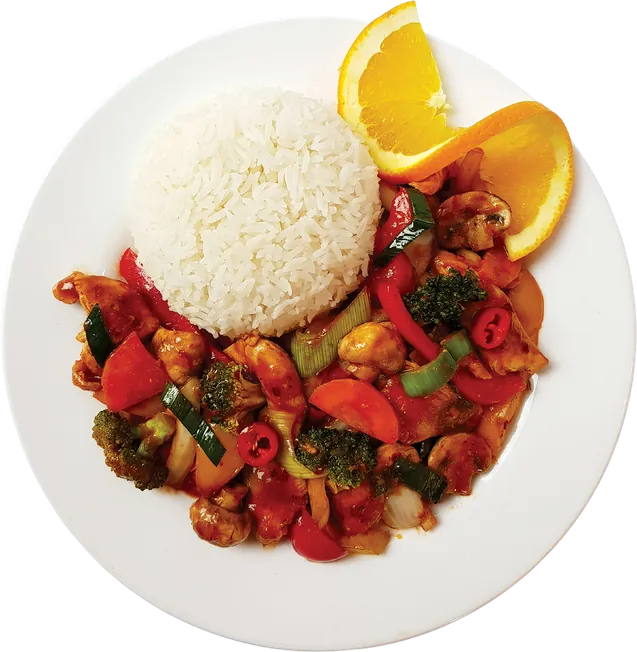
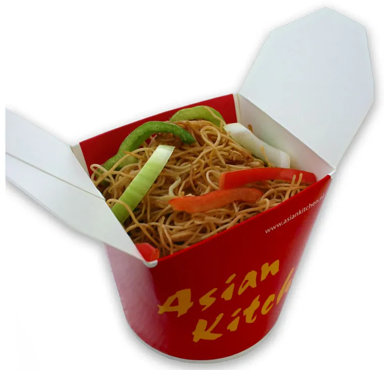

Johan Cruijff Boulevard 81 · Amsterdam
Wokgerechten, noedels en soep
Vers bereid met veel groenten en snel klaar. Bel je bestelling door en haal je eten op bij Asian Kitchen Arena, ook vlak voor een concert of wedstrijd.
- Alle kip is halal
- Telefonisch bestellen, zelf ophalen
- Geen bezorging
ma–za 11:30–21:15 · zo 13:00–20:45 · Route



Menu
Noem het nummer als je belt. Prijzen in euro, zoals op onze menukaart.
Noedels & nasi
Gebakken eiernoedels of nasi (gebakken rijst met ei), met groenten. Kies kip, rundvlees of garnalen.
| Met | Noedels | Nasi | Prijs |
|---|---|---|---|
| Kiphalal | 2aNoedels met kip, € 13,00 | 2bNasi met kip, € 13,00 | € 13,00 |
| Rundvlees | 3aNoedels met rundvlees, € 14,00 | 3bNasi met rundvlees, € 14,00 | € 14,00 |
| Garnalen | 4aNoedels met garnalen, € 15,00 | 4bNasi met garnalen, € 15,00 | € 15,00 |
Wokgerechten
Alle wokgerechten zijn met groenten en witte rijst. Kies een saus en kip, rundvlees of garnalen.
Liever eiernoedels of nasi in plaats van witte rijst? Dat kan voor + € 2,50. Alle extra's
| Saus | Kip€ 13,50halal | Rundvlees€ 15,50 | Garnalen€ 17,50 |
|---|---|---|---|
| KerriesausPittig | 19Kip met kerriesaus, € 13,50 | 25Rundvlees met kerriesaus, € 15,50 | 31Garnalen met kerriesaus, € 17,50 |
| Zwarte bonensaus (zoutig)Pittig | 20Kip met zwarte bonensaus (zoutig), € 13,50 | 26Rundvlees met zwarte bonensaus (zoutig), € 15,50 | 32Garnalen met zwarte bonensaus (zoutig), € 17,50 |
| Zoetzuur | 21Kip zoetzuur, € 13,50 | 27Rundvlees zoetzuur, € 15,50 | 33Garnalen zoetzuur, € 17,50 |
| Szechuan (pittig)Extra pittig | 22Kip Szechuan (pittig), € 13,50 | 28Rundvlees Szechuan (pittig), € 15,50 | 34Garnalen Szechuan (pittig), € 17,50 |
| Gong Bao (zoet en pittig)Pittig | 23Kip Gong Bao (zoet en pittig), € 13,50 | 29Rundvlees Gong Bao (zoet en pittig), € 15,50 | 35Garnalen Gong Bao (zoet en pittig), € 17,50 |
| Oestersaus | 24Kip met oestersaus, € 13,50 | 30Rundvlees met oestersaus, € 15,50 | 36Garnalen met oestersaus, € 17,50 |

Specialiteiten
Aanbevolen door de keuken.
Bij nr. 15, 16, 16a: eiernoedels of nasi in plaats van witte rijst kan voor + € 2,50. Alle extra's
-
Nr. 15
Knapperige Pekingeend€ 19,50
Met saus van de chef en witte rijst.
-
Nr. 16
Char siu€ 17,50
Geroosterd varkensvlees met witte rijst.
-
Nr. 16a
Geroosterd buikspek€ 18,50
Met witte rijst.
-
Nr. 17
Noedels Singapore€ 16,00
Noedels met char siu (geroosterd varkensvlees) en garnalen in kerriesaus.
-
Nr. 18
Nasi Yeung Chow€ 16,00
Gebakken rijst met char siu (geroosterd varkensvlees) en garnalen.
Soepen
Noedelsoep, een hele maaltijd
-
Nr. 41
Wonton-noedelsoep€ 14,50
Met noedels en wontons gevuld met varkensvlees.
-
Nr. 43
Char siu-noedelsoep€ 17,50
Met noedels en char siu (geroosterd varkensvlees).
-
Nr. 44
Pekingeend-noedelsoep€ 19,50
Met noedels en Pekingeend.
Vegetarische noedelsoep: nr. 46 bij Vegetarisch.
Kleine soep, vooraf of erbij
-
Nr. 5
Kippensoep€ 5,50
-
Nr. 6
Groentesoep€ 5,50
-
Nr. 7
Wontonsoep€ 6,50
Heldere bouillon met wontons gevuld met varkensvlees.
Vegetarisch
Vegetarisch volgens onze menukaart. Dat is niet hetzelfde als veganistisch.
Bij nr. 37: eiernoedels of nasi in plaats van witte rijst kan voor + € 2,50. Alle extra's
-
Nr. 37
Roergebakken groenten€ 14,50
Gemengde groenten uit de wok, met witte rijst.
-
Nr. 39
Nasi met ei en groenten€ 12,50
Gebakken rijst met ei en gemengde groenten.
-
Nr. 40
Noedels met ei en groenten€ 12,50
Noedels met ei en gemengde groenten.
-
Nr. 46
Noedelsoep met groenten€ 16,00
Maaltijdsoep met noedels en gemengde groenten.
Bites
Kleine gerechten, om te delen of vooraf.
-
Nr. 9
Kipsaté€ 6,00
3 spiezen.
-
Nr. 11
Gestoomde kipdumplings (siu mai)€ 6,00
4 stuks.
-
Nr. 12
Gefrituurde kipdumplings (siu mai)€ 6,00
4 stuks.
-
Nr. 13
Mini-loempia's€ 5,00
6 stuks.
-
Nr. 14
Krokante garnalen€ 5,50
2 stuks.
Extra's
Voor hoofdgerechten. Geef ze door als je belt.
Ruilen
Je krijgt dit in plaats van de witte rijst, niet erbij.
- Eiernoedels of nasi met ei in plaats van witte rijst+ € 2,50
Extra portie erbij
Een extra portie bovenop je gerecht.
- Saus+ € 2,50
- Witte rijst+ € 3,50
- Eiernoedels+ € 5,50
- Nasi met ei+ € 5,50
- Kip (halal)+ € 4,00
- Rundvlees+ € 4,50
- Garnalen (3 stuks)+ € 4,50
- Groenten+ € 4,00
- Ei+ € 2,50
Zo reken je het uit
- Nr. 19 met nasi in plaats van witte rijst: € 13,50 + € 2,50 = € 16,00
- Nr. 19 met een extra portie witte rijst: € 13,50 + € 3,50 = € 17,00
Twijfel je of iets kan bij jouw gerecht? Vraag het als je belt.
Dranken
- Frisdrank, sap of waterCoca-Cola (regular of zero), Sprite, Fanta Orange, mangosap, Ice Tea Green, Fernandes (cherry of green punch), Spa water (zonder of met prik) € 3,50
- Red Bull € 4,50
- Bier, blikje (330 ml) € 4,50
- Bier, 25 cl € 4,50
- Bier, 50 cl € 8,00
- Tsingtao (Chinees bier) € 4,50
- Witte wijn € 5,50
- Rode wijn € 5,50
- Chinese thee € 3,50
- Koffie € 3,50
Alcohol alleen vanaf 18 jaar. We kunnen om je ID vragen.

Bestellen en afhalen
We bezorgen niet en online bestellen kan niet. Bellen en ophalen gaat zo:
Kies je gerechten op het menu en onthoud de nummers.
Bel 020 365 7971 en geef je bestelling door. Noem ook je allergieën.
Spreek samen een afhaaltijd af.
Haal je eten op aan de Johan Cruijff Boulevard 81. Je betaalt bij het ophalen.
Ga je naar een concert of wedstrijd? Bel dan op tijd.
Bel 020 365 7971Openingstijden en adres
Openingstijden
| Maandag · vandaag | 11:30–21:15 |
|---|---|
| Dinsdag · vandaag | 11:30–21:15 |
| Woensdag · vandaag | 11:30–21:15 |
| Donderdag · vandaag | 11:30–21:15 |
| Vrijdag · vandaag | 11:30–21:15 |
| Zaterdag · vandaag | 11:30–21:15 |
| Zondag · vandaag | 13:00–20:45Bij een voetbalwedstrijd op zondag zijn we open vanaf 12:00. |
Hier vind je ons
Asian Kitchen Arena
Johan Cruijff Boulevard 81
1101 DL Amsterdam(voorheen Arena Boulevard)
Bellen
Goed om te weten
Bezorgen jullie?
Nee. Je bestelt telefonisch via 020 365 7971 en haalt je eten zelf bij ons op. Online bestellen kan ook niet.
Kan ik reserveren?
Nee, reserveren is niet mogelijk.
Hoe snel is mijn bestelling klaar?
We maken alles vers en het is snel klaar. Als je belt, spreken we samen een afhaaltijd af.
Is het eten halal?
Alle kip die we gebruiken is halal. Dat geldt niet voor het hele menu: er staan ook varkensvlees, rundvlees, eend en garnalen op.
Ik heb een allergie. Waar moet ik op letten?
Zeg het altijd als je belt. Er staat nog geen gecontroleerde allergenenlijst per gerecht op deze site, maar de keuken kan je vertellen wat er in een gerecht, de saus en de bouillon zit. Ook extra's kunnen allergenen bevatten. Kruisbesmetting kan voorkomen, dus we kunnen niet garanderen dat een gerecht vrij is van een allergeen.
Wat is er vegetarisch?
Nr. 6, 13, 37, 39, 40 en 46 zijn vegetarisch volgens onze menukaart. Vegetarisch is niet automatisch veganistisch: 39 en 40 zijn bijvoorbeeld met ei.
Wat betekenen de pepers?
Het aantal pepers komt van onze menukaart. Eén peper is pittig, twee pepers is extra pittig.
Zijn jullie open als er een voetbalwedstrijd is?
Op zondag met een voetbalwedstrijd zijn we open vanaf 12:00. De andere tijden staan bij de openingstijden.
Hoe betaal ik?
Je betaalt bij het ophalen.